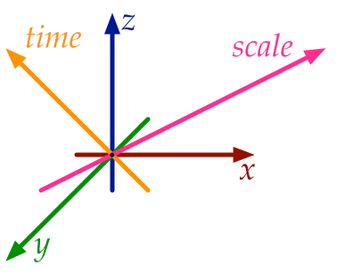

Our world is three-dimensional and complex, continuously changing over time and appearing different at different scales. Yet, when we model it in a computer using Geographic Information Systems (GIS), we mostly use 2D representations, which essentially consist of linked points, lines and polygons (Figure 1). These representations are relatively easy to use and efficient, and a wide variety of methods is built on top of them. However, 2D representations are necessarily limiting. They force us to reduce problems to two dimensions, limit the type of objects we can represent, and complicate storing the relationships between different objects—especially when these are across time and different scales. Nevertheless, most research in GIS is devoted to improving these 2D representations, as well as to the development of new methods that build on them to solve problems, both old and new.
This thesis explores a new, fundamentally different modelling approach—integrating both spatial and non-spatial characteristics as dimensions in the geometric sense, specifically targeting the cases of time and scale (Figure 2). While this has been proposed before at a conceptual level, this thesis aims to realise the fundamental aspects of a higher-dimensional GIS by developing higher-dimensional (\(n\)D) representations, as well as new methods operating on them to create, manipulate and visualise geographic information. As this thesis shows, the higher-dimensional approach is undoubtedly memory-intensive, but it is also very powerful, as it provides a simple and consistent way to store geometry, attributes and the topological relationships between objects of any dimension. This generic approach can also be easily extended to handle other non-spatial characteristics, enabling better data management that is consistent across dimensions and more powerful operations, such as checking if two objects are adjacent at any point in time.
In order to model higher-dimensional space, it is best to consider an \(n\)D space subdivision as a base (Figure 3), which is conceptualised as an \(n\)-dimensional simplicial complex or cell complex. This can then be implemented with a simplex-based data structure, with an incidence graph, as a set of Nef polyhedra, or—as done in this thesis—by using ordered topological models such as the cell-tuple and generalised/combinatorial maps.
Creating computer representations of higher-dimensional objects can be complex. Common construction methods used in 2D and 3D, such as directly manipulating combinatorial primitives, or using primitive-level construction operations (such as Euler operators), rely on our intuition of 2D/3D geometry, and thus do not work well in higher dimensions. It is therefore all too easy to create invalid objects, which then cannot be easily interpreted or fixed—a problem that is already exceedingly apparent in three dimensions.
As a way to easily create representations of higher-dimensional objects, this thesis proposes three novel higher-level methods, all of which are intuitive to use and attempt to create valid output. Extrusion takes an \((n-1)\)-dimensional cell complex and a set of intervals per cell, projecting them parallel to a new axis in order to create an \(n\)-dimensional cell complex (Figure 4). Incremental construction describes an \(n\)-dimensional object based on its \((n-1)\)-dimensional boundary, from dimension zero (points) and then upwards. Finally, a 4D model can be constructed from a series of 3D models at different levels of detail (LODs) by linking them (Figure 5).
In order to visualise higher-dimensional models, as well as to be able to process them in existing software, it is important to have methods to extract meaningful 2D/3D subsets from them. As a stepping stone towards such methods, this thesis shows how \(n\)-dimensional to (\(n-1\))-dimensional orthographic and perspective projections can be defined.
Finally, this thesis placed an emphasis on validating the algorithms with real-world datasets, which was only possible by developing methods to repair the invalid datasets that are widespread in practice. This thesis thus contains methods to create valid polygons and planar partitions using a constrained triangulation of the input, as well as a method to repair polyhedra and space subdivisions by snapping together lower-dimensional primitives and removing overlaps using Boolean set operations on Nef polyhedra. This allowed tests with up to 6D datasets based on real-world data—a good base for higher-dimensional GIS.
In the future, the work in this thesis will be extended with higher-dimensional modification operations, true 4D spatiotemporal datasets and repair methods with quality guarantees. All implementations made for this thesis are publicly available under open source licences.

Figure 1: In GIS, a cube is not represented as a 3D solid, but as the 6 square 2D faces that bound it.↩

Figure 2: 3D space, time and scale can be modelled as 5D space.↩

Figure 3: A 3D space subdivision model is composed of a set of space-filling volumes without gaps or overlaps.↩

(a)

(b)
Figure 4: (a) A set of polygons is converted into (b) a set of boxes by 2D-to-3D extrusion.↩

Figure 5: Two LODs of a 3D model of a house (left and right) are linked into a 4D model.↩